Acerca de mí
Pues aquí estoy, "lupinero" desde los años '80, la revistucha me llevó a conocer y recorrer varias actividades. Aeromodelismo, astronomía y campismo son actividades que aún practico. Incursioné en cohetería, electrónica, filatelia y en coleccionar lo que se cruzara. Apasionado de los aviones y la astronáutica, utilizo la impresión 3d para recrear modelos. Además practico el kayakismo recreativo.
Pero si halgo me quedaba pendiente de las enseñanzas de la revista Lúpin, era entrar en el mundo de los radioaficionados. Hace ya 20 años tuve la oportunidad de obtener mi licencia, pero por una razón u otra, no pude hacerme de una estación operativa hasta ahora. Pues aquí estoy...sueño cumplido.
Diciembre 2024
About me
Well, here I am, a "lupinero" since the '80s, the magazine took me to know and explore various activities. Aeromodelling, astronomy and camping are activities that I still practice. I dabbled in rocketry, electronics, philately and collecting whatever came across. Passionate about airplanes and astronautics, I use 3D printing to recreate models. I also practice recreational kayaking.
But if there was one thing I was waiting for from the teachings of Lúpin magazine, it was to enter the world of radio amateurs. 20 years ago I had the opportunity to obtain my license, but for one reason or another, I was not able to get an operational station until now. Well here I am...dream come true.
December 2024
Activaciones/Activations
Mi estación/My rig
RX/TX
- Yaesu FT747 GX
- Yaesu FT1802M
- Baofeng UV5R
Antenas
- Bigote de gato/Fan dipole 40/20/10 m.
- Ringo VHF double 5/8
- Moxon yagi VHF/UHF portable
Mi software/My soft
- Manjaro Linux (Gnome) - OS
- QLog - Libro de Guardia / Amateur Radio logging. ¡Ahora en español ;)!
- JTDX - FT4, FT8,JT4, JT9, JT65, QRA64, ISCAT, MSK144
- QSSTV - Recepción y transmisión SSTV / Receiving and transmitting SSTV
- GridTracker - Mucha información para el radioaficiondo / a warehouse of amateur radio information and much more
- Gpredict - Rastreador de satélites / Satellite tracker
En el Aire/On Air
Postales de mi pueblo/Postcards of my town
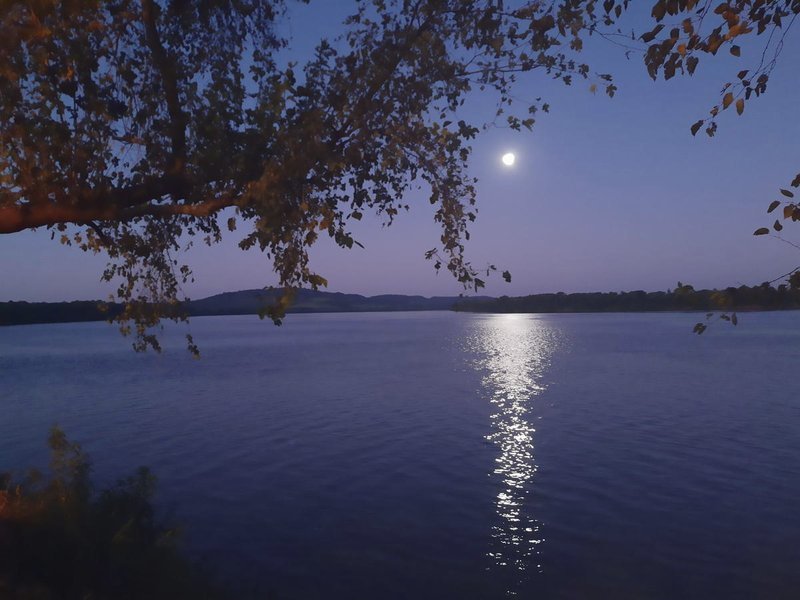 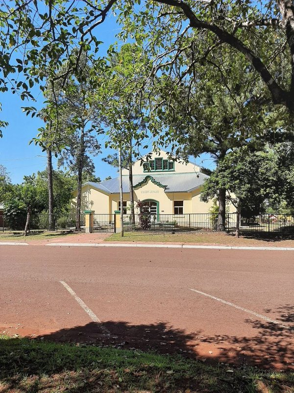Concursos/Contests
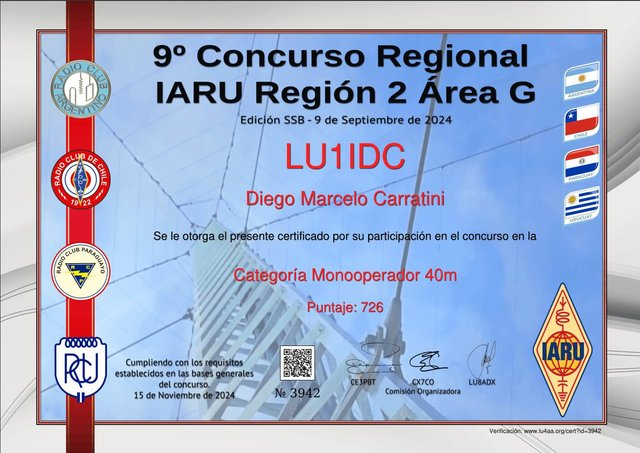
 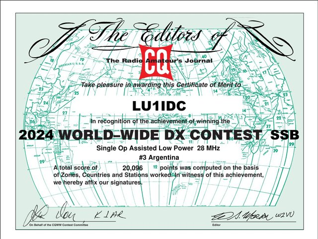
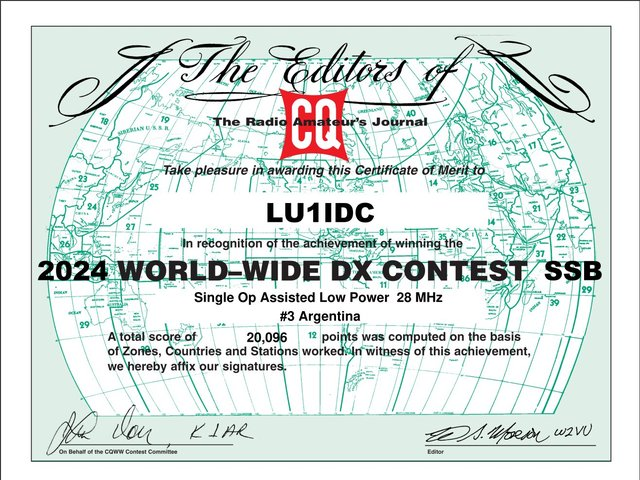
continue...
Diplomas/Awards

 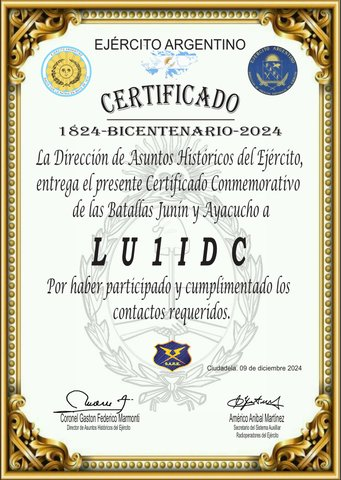
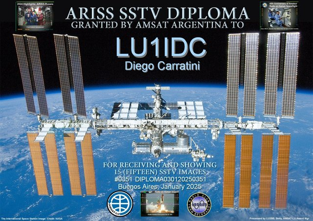
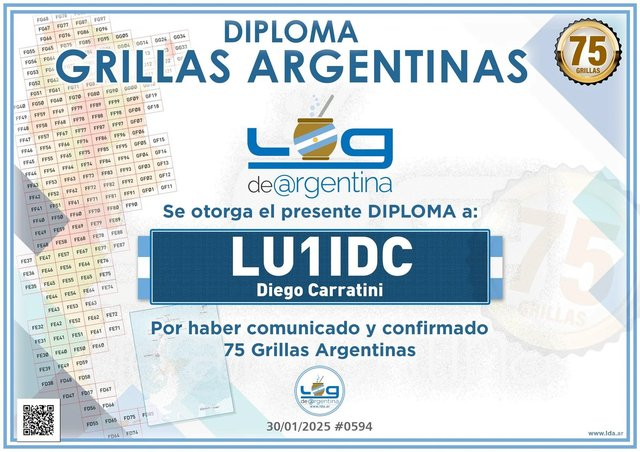
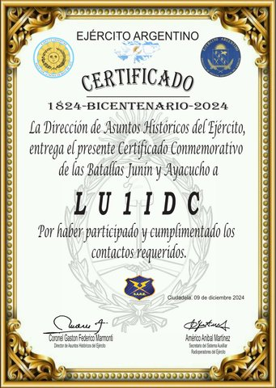
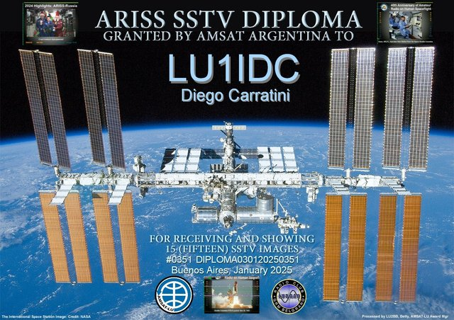
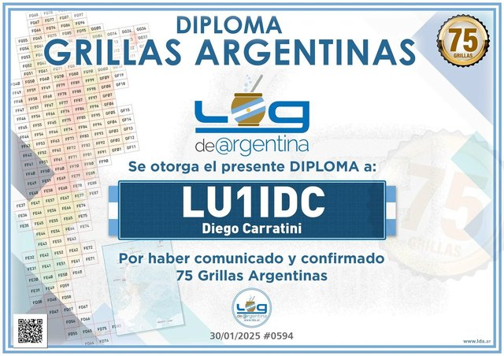
continue...
Activaciones pasadas/Old Activations
- 06/07/2024 - 09/07/2024 "DÍA DE LA INDEPENDENCIA ARGENTINA" - Download QSL
- 22/06/2024 - 23/06/2024 "TODOS UNIDOS BAJO EL MISMO MANTO PATRIO" - Download QSL